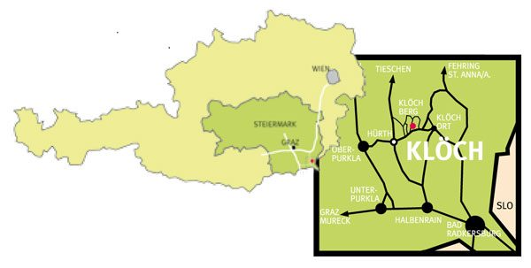

Gasthof Palz
Palz Mathilde Gastronomie GmbH & Co KG
Klöchberg 45
8493 Klöch
Tel. 03475 2311
Fax 03475 2311-4
office@gasthof-palz.at
www.gasthof-palz.at
PALZ – Kontakt
Mitten in den Klöcher Weinbergen, im Vulkanland Steiermark. Wir freuen uns auf Ihren Anruf, Ihre Nachricht und Ihren Besuch.
Palz Mathilde Gastronomie GmbH & Co KG
Klöchberg 45
8493 Klöch
Tel. 03475 2311
Fax 03475 2311-4
office@gasthof-palz.at
www.gasthof-palz.at
Klöchberg 45
8493 Klöch
Tel. 03475 2311
Fax 03475 2311-4
office@gasthof-palz.at
www.gasthof-palz.at
Mittwoch bis Sonntag
ab 11:00 Uhr, durchgehend warme Küche bis 19:30 Uhr
Montag und Dienstag Ruhetag, ausgenommen Feiertage.
Betriebsurlaub: 13.07. – 19.07.2026
Anfahrt

Reisebusse: Mit 450 Sitzplätzen sind wir auf größere Reisegesellschaften eingerichtet. Bitte melden Sie Ihre Gruppe vorab an – Gruppenanfrage oder telefonisch unter 03475 2311.
Nachricht schreiben
Für alles, was in kein Formular passt: Fragen zu Weinen, zu Terminen, zu Gutscheinen oder zu Ihrem Fest.